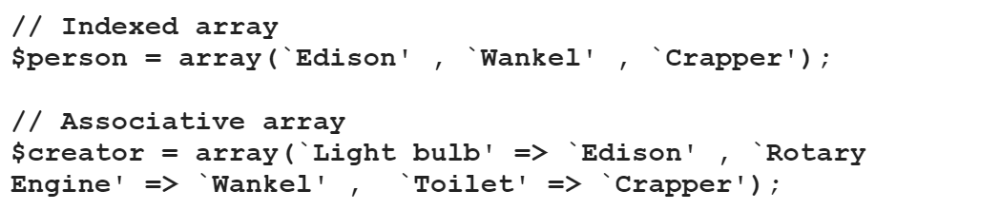
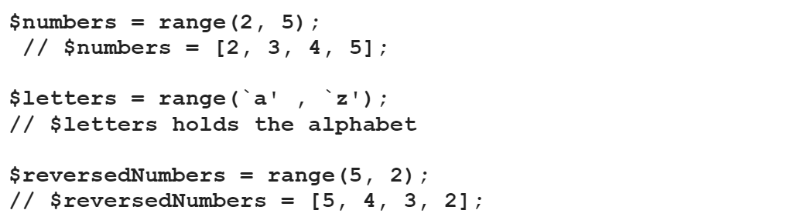

Pembuatan Array Menggunakan array()
Memasukkan suatu nilai dapat dengan fungsi array()

Pembuatan Array Berurutan Menggunakan range()
Dengan fungsi range() dapat memasukkan suatu nilai yang berurutan sekaligus.

Memasukkan Tambahan Nilai Pada Akhir Indexed Array
Untuk menambahkan suatu nilai pada array di akhir dapat menambahkan kurung siku kemudian dilakukan assignment.

Array Destructuring
Suatu nilai dalam array dapat dimasukkan ke suatu variabel dengan menggunakan array destructuring.

Fungsi count() dan sizeof() Mengembalikkan Jumlah Elemen Array
Fungsi count() dapat digunakan untuk menentukan jumlah elemen pada array.